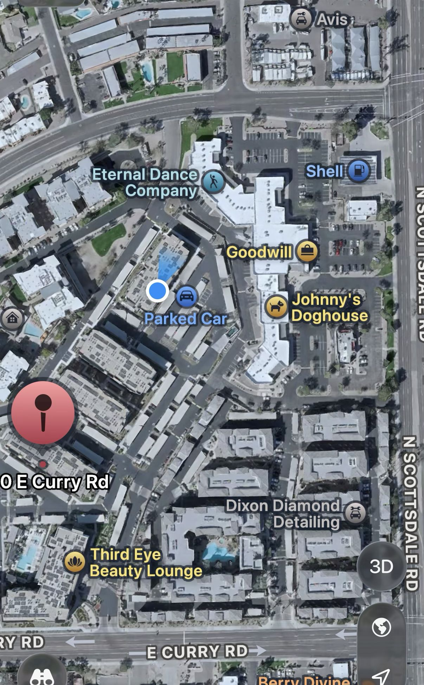
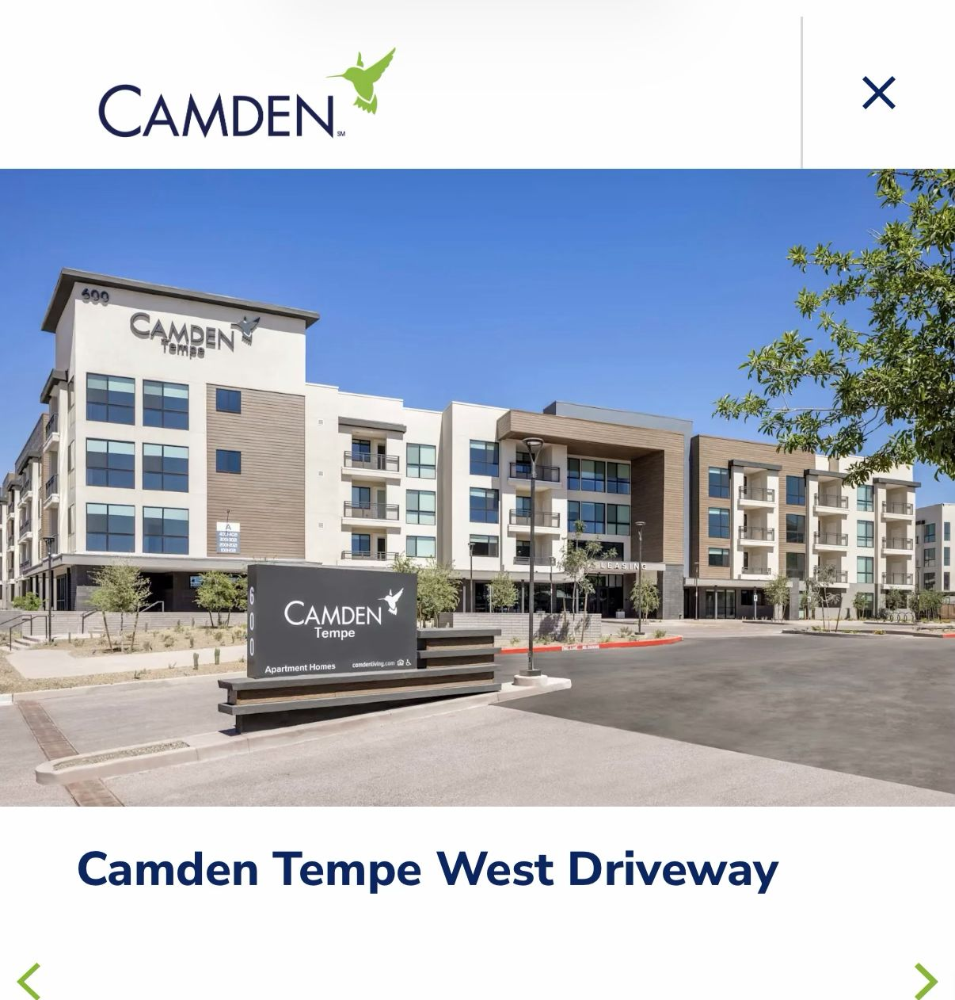
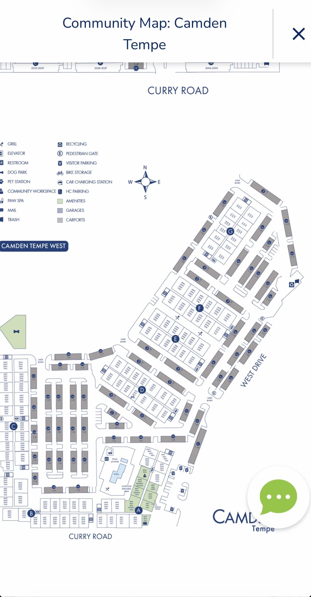

Finding My Door
directions to the gate, for delivery drivers
Camden Tempe
600 E Curry Rd, Tempe, AZ 85281
Unit G1105
Wide view — where this sits
Camden Tempe sits between E Curry Rd (south) and N Scottsdale Rd (east). This is a real satellite screenshot, not a drawing.

Real satellite screenshot — property outlined in yellow.
The gate — two ways in
Route 1 is traced on your satellite screenshot below. Route 2 goes around the back of the complex to the same gate — I couldn't trace that leg accurately from the photo, so it's described in words only under Route 2 below.

Real satellite screenshot, traced by hand — Route 1 only.
Route 1 — From Curry Rd
Enter the property directly from Curry Rd and follow the drive to the gate.
Route 2 — From the road north of Curry
Enter from the road just north of Curry and go around the back of the complex — there's a winding path near the dumpsters. It brings you to the same gate as Route 1.
The gate entrance has a keypad and faces Scottsdale Rd.
What you'll see
The Camden Tempe sign and building, for a visual check you're in the right place.

Real photo — Camden Tempe entrance and sign.
Official community map
The property's own site plan. Building G — where G1105 is — circled, next to its gate entry.

Source: camdenliving.com community map.